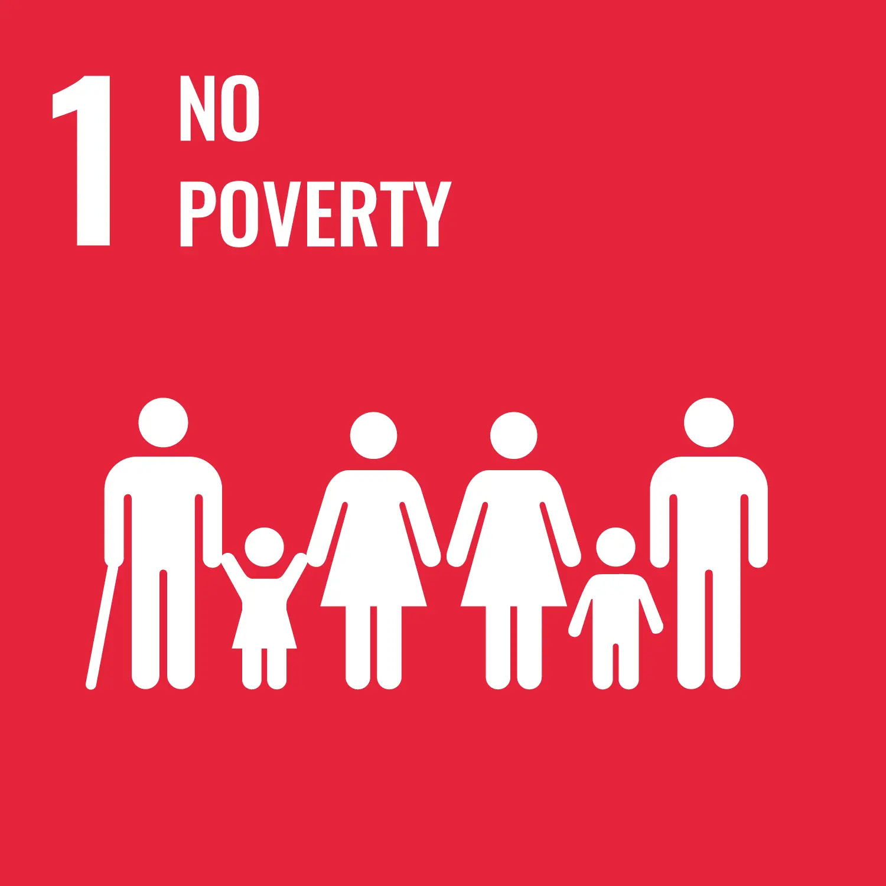
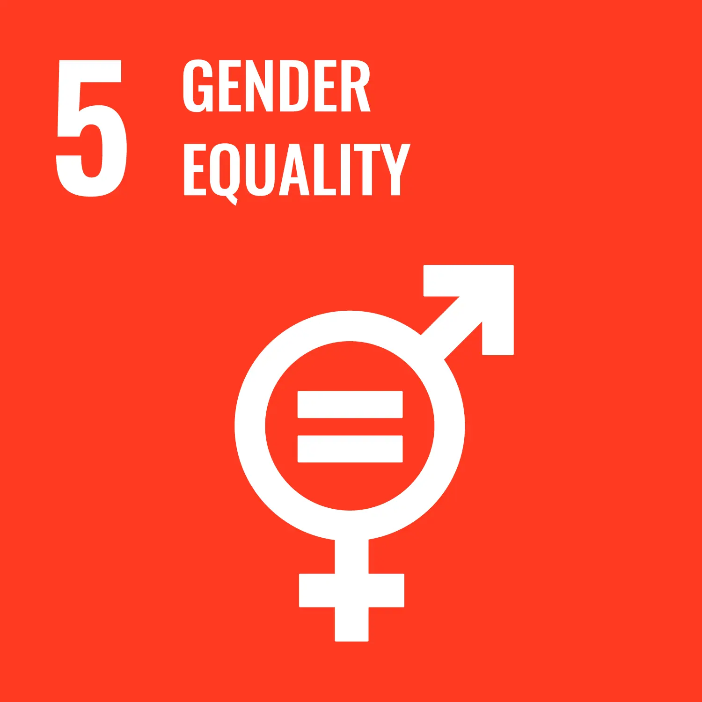
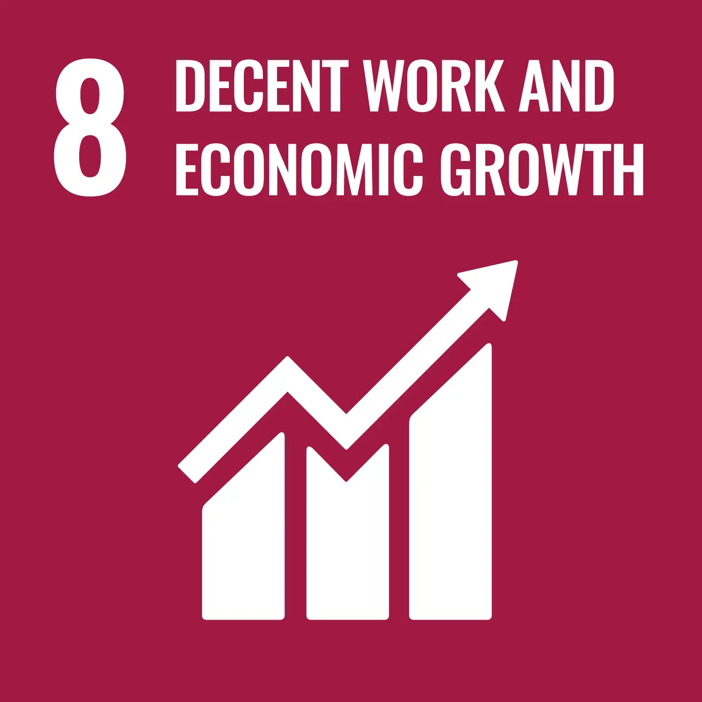
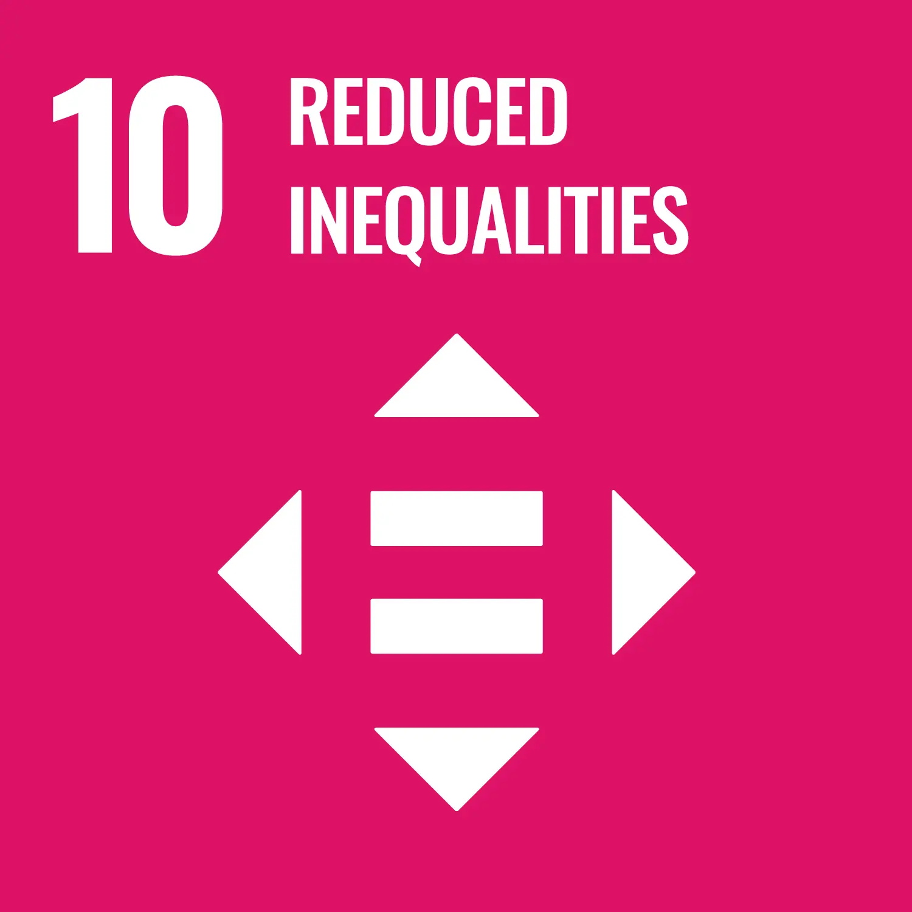

.webp)
Policy Insights
Decent Work Policy
Policy Insights
Decent Work Policy

Decent Work Policy refers to the institutional, legal, economic, and social-policy frameworks designed to promote productive employment under conditions of dignity, equity, security, and social protection. It reflects a comprehensive approach to labour governance that connects employment creation with workers’ rights, social dialogue, workplace protection, and inclusive economic development.
The concept of Decent Work emerged through the International Labour Organization’s (ILO) effort to reposition employment quality at the centre of development policy. It recognizes that employment alone is insufficient if work remains insecure, exploitative, informal, unsafe, or disconnected from broader systems of social inclusion and economic participation.
Decent Work Policy therefore functions not merely as labour regulation, but as a broader development governance framework. It links labour-market systems, workforce development, enterprise growth, social protection, gender inclusion, and institutional coordination into a coherent policy architecture aimed at improving both economic performance and human wellbeing.
In practice, Decent Work frameworks increasingly shape National Employment Policies, labour reforms, social-protection systems, skills-development strategies, and post-crisis recovery programmes across both developed and developing economies. They also provide governments and development institutions with operational frameworks for addressing unemployment, informality, inequality, youth exclusion, migration vulnerabilities, and labour-market instability.
Decent Work is now widely understood as a central component of inclusive and sustainable economic development. Economies that generate employment without improving job quality often experience persistent inequality, weak productivity growth, social instability, and structural poverty.
The relationship between employment quality and development outcomes has become increasingly important in contemporary policy discourse because labour markets influence:
Decent Work frameworks therefore aim to ensure that economic growth translates into broad-based livelihood improvement rather than concentrated wealth accumulation or precarious labour expansion.
In many emerging economies, high GDP growth has coexisted with rising unemployment, informality, and working poverty. This disconnect has reinforced the importance of employment-centred development strategies that prioritize productive and rights-based labour systems.
Research on macroeconomic policy and productive employment systems in Nigeria has similarly demonstrated how economic growth alone does not automatically generate inclusive labour-market outcomes without coordinated employment-focused policy frameworks.
Decent Work also contributes to economic resilience. During economic crises, pandemics, conflict recovery, or climate-related disruptions, countries with stronger labour institutions, social-protection systems, and workforce-governance mechanisms are generally better positioned to stabilize livelihoods and support labour-market recovery.
The ILO’s Decent Work Agenda is structured around four interrelated pillars:
These pillars function as mutually reinforcing components of labour governance rather than isolated policy categories.
Employment generation remains central to Decent Work Policy. However, the emphasis extends beyond employment quantity to include productivity, sustainability, inclusion, and employment quality.
This includes:
Increasingly, governments are integrating employment creation into broader industrial, infrastructure, digital-economy, and green-transition frameworks.
Rights-based labour governance forms a foundational component of Decent Work frameworks. This includes:
Labour rights are increasingly recognized as both social protections and economic governance tools because stable labour relations contribute to productivity, workforce stability, and institutional trust.
Social protection systems reduce vulnerability associated with unemployment, illness, workplace injury, old age, and economic shocks.
Modern Decent Work frameworks increasingly integrate:
In developing economies, expanding social protection coverage has become critical due to the scale of informal employment and labour-market insecurity.
Social dialogue refers to structured engagement between governments, employers, labour unions, and social partners in shaping labour and economic policy.
Effective social dialogue strengthens:
In many contexts, social dialogue mechanisms are essential for managing labour reforms, wage negotiations, workforce transitions, and crisis-response frameworks.

Governments typically implement Decent Work frameworks through integrated policy systems rather than standalone labour programmes.
One of the primary implementation mechanisms is the Decent Work Country Programme (DWCP), developed jointly by the ILO, governments, employers’ organizations, labour unions, and development partners. DWCPs help countries align national priorities with the broader Decent Work Agenda while adapting implementation to local labour-market realities.
Implementation usually involves:
Increasingly, National Employment Policies are also structured around Decent Work principles.
The reviewed National Employment Policy of Nigeria for example, integrates employment creation, labour-market governance, gender-responsive workforce development, Labour Market Information Systems, Active Labour Market Policies, public employment services, social dialogue, labour inspection, and social protection within a coordinated employment-governance framework.
The policy additionally links employment governance to institutional coordination structures such as the National Employment Council, state-level coordination mechanisms, and monitoring and evaluation systems designed to improve implementation coherence.

Decent Work supports inclusive growth by improving the capacity of economies to distribute the benefits of growth through productive employment and labour inclusion.
This relationship is particularly important in economies where:
Decent Work frameworks therefore connect labour-market inclusion with broader systems of:
In practice, this often involves:

Analysis of inclusive growth and workforce systems in Nigeria has further emphasized how labour-market exclusion, weak employability systems, and structural economic constraints can undermine the ability of economic growth to generate broad-based employment opportunities.
Gender-responsive employment systems also form a growing component of Decent Work governance. Many national frameworks now incorporate targeted interventions for women, youth, persons with disabilities, and vulnerable workforce groups as part of inclusive labour-market reform.
The ILO serves as the principal multilateral institution responsible for advancing the global Decent Work Agenda.
Its role includes:
The ILO also supports countries through:
Importantly, the ILO’s approach emphasizes policy integration. Decent Work is treated not as a sectoral labour issue alone, but as part of broader development governance involving ministries of finance, planning, education, trade, industry, social protection, and economic development.
The institutional evolution of Decent Work frameworks also reflects growing multilateral recognition that labour governance is central to sustainable development, social stability, and economic transformation.
In developing and fragile contexts, Decent Work frameworks are often integrated into recovery, resilience, and stabilization strategies.

Countries affected by conflict, economic crisis, displacement, or institutional fragility frequently face:
In such environments, Decent Work policies support:
In post-crisis contexts such as Sierra Leone, Liberia, and Libya, employment and livelihoods programmes have increasingly combined workforce development with resilience-building, local economic recovery, and private-sector engagement strategies.
Similarly, labour-market and livelihood recovery frameworks implemented across fragile and resource-dependent economies increasingly emphasize:
Research examining employment systems in extractive-industry-dependent African economies has also highlighted the importance of linking productive employment, labour governance, social protection, and economic diversification strategies within broader inclusive-growth frameworks.
Decent Work is directly embedded within the Sustainable Development Goals, particularly SDG 8 , which commits countries to sustained, inclusive and sustainable economic growth, full and productive employment, and decent work for all.
However, the relevance of Decent Work extends across multiple SDGs because labour systems influence:
Decent Work frameworks therefore contribute to:




This multidimensional relevance explains why Decent Work increasingly functions as a cross-sector governance framework rather than a narrow labour-policy instrument.
The reviewed National Employment Policy of Nigeria explicitly aligns employment governance with the SDGs, the National Development Plan, and the Decent Work Country Programme framework in order to strengthen policy coherence and employment-centred development planning.
Ultimately, Decent Work Policy reflects a broader shift in development thinking: from viewing labour merely as an economic input toward recognizing employment systems as foundational institutions of social inclusion, economic resilience, democratic governance, and sustainable development.
Comparative & Macroeconomic Policy
Employment Working Paper No. 221, International Labour Organization (ILO), Geneva
Employment Policy
International Labour Organization (ILO) & Federal Ministry of Labour and Employment, Nigeria
Comparative & Macroeconomic Policy
Current Opinion in Environmental Sustainability, Vol. 39